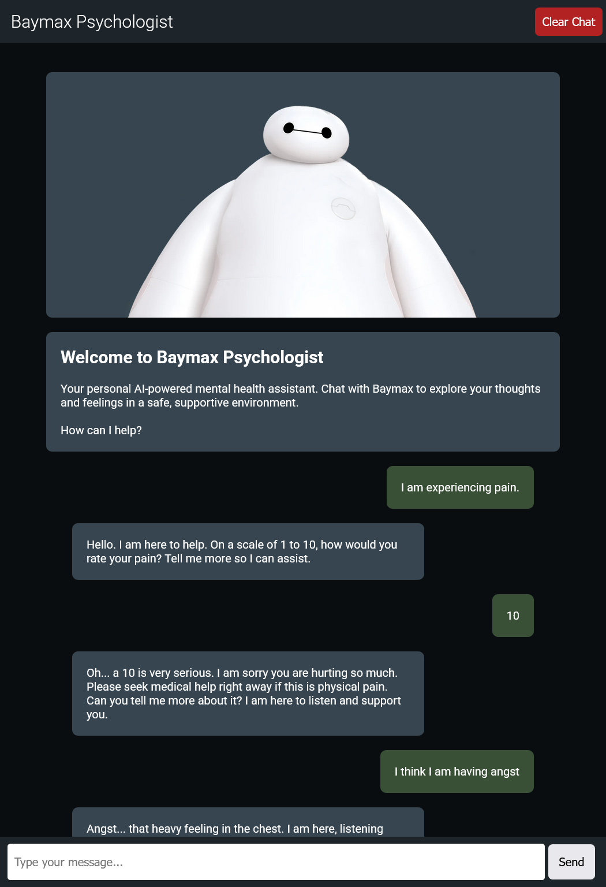

Heisann! Mitt navn er
Daniel Faour.
Jeg er en UX-designer og programvareutvikler.


About me
Jeg har en mastergrad i informatikk fra Universitetet i Oslo, med spesialisering innen UX-design og utvikling. Min bakgrunn i informatikk og design gjør meg i stand til å skape engasjerende og meningsfulle opplevelser gjennom teknologi. Jeg søker nye muligheter for å vokse som både designer og utvikler.
Jeg har jobbet med ulike prosjekter, blant annet web- og apputvikling, interaktive installasjoner og taktile grensesnitt. Mine ferdigheter inkluderer objektorientert programmering, front-end utvikling og brukersentret design. Jeg bruker verktøy som Figma og metoder som prototyping, brukertesting og workshops for å forstå brukerbehov. Jeg har erfaring med å lede tverrfaglige team og trives med å løse problemer på en kreativ måte.
Utenom jobb liker jeg fotografering, matlaging, trening, spill og å tilbringe tid med venner. Jeg er lidenskapelig opptatt av design og teknologi og ser frem til å bidra positivt innen feltet.
Skills
 UX-Design
Universiell Design
Etisk Design
Produkt Design
UX-Design
Universiell Design
Etisk Design
Produkt Design
 Web Utvikling
App Utvikling
Programmering
Informasjonssikkerhet
Web Utvikling
App Utvikling
Programmering
Informasjonssikkerhet
 Prosjektledelse
Lederskap
Public Relations
Prosjektledelse
Lederskap
Public Relations
 Salgskompetanse
Salgskompetanse
Se gjennom arbeidet mitt!
Masteroppgave i Informatikk - IN5960
(2024)

"The Three Fundamental Qualities for Emotional Influence in Design"
Denne masteroppgaven undersøker forholdet mellom design og følelser, med fokus på de grunnleggende kvalitetene som påvirker emosjonelle responser i designartefakter. Ved å bruke Research through Design som hovedmetode, støttet av prinsipper fra Emotional-Driven Design, utforsker oppgaven hvordan disse kvalitetene bidrar til å skape følelsesmessig engasjerende installasjoner. Prosessen bestod av fire faser: datainnsamling, konseptutvikling, utvikling av installasjonen og analyse. Gjennom arbeidet identifiserte vi tre grunnleggende kvaliteter: historiefortelling, sanselig engasjement og familiaritet. Disse viser seg å være sentrale for å skape mer immersive opplevelser. I tillegg kan elementer som utforskning, meningsfulle interaksjoner, kontraster og robusthet ytterligere styrke det emosjonelle engasjementet. Studien gir både teoretisk støtte og praktiske føringer innen designorientert HCI og RtD-metodikk, og presenterer et rammeverk for videre forskning og utvikling av emosjonelt engasjerende interaktive artefakter.
Karakter: B
Lenken funker ikke. Spør meg om en digital kopi!
Drikkings.no
(2025)

Dette er en drikkelek-applikasjon som skal lage engasjerende spill for mindre grupper uten å ødelegge praten. Målet er å gjøre den lett tilgjengelig som en nettapplikasjon, derfor bruker jeg React + Vite. Den har nå fem spill, blant annet «1/16 Minesweeper» og «Shot Roulette», som vises på bildet. Applikasjonen er laget for å være brukervennlig og lett å navigere, slik at folk raskt kan komme i gang og spille.
Mus Kontroller
(2025)
Dette er et lite prosjekt jeg lagde for å kunne styre musen på datamaskinen ved hjelp av en hvilken som helst Bluetooth-spillkontroller. Jeg brukte Pygame til å lese kontroller-inputs og Pyautogui til å styre musen samt enkelte tastetrykk. Perfekt for presentasjoner eller når du ønsker å kontrollere PC-en fra avstand.
Baymax Psykologi AI
(2025)

En psykolog-inspirert AI-chatbot basert på Baymax fra Big Hero 6.
Laget med Angular og Typescript. Chatboten er utviklet for å gi
emosjonell støtte og assistanse til brukeren. Det er i bunn og
grunn en enkel nettapplikasjon som bruker OpenRouter-API for å
generere svar. Applikasjonen består av et chatgrensesnitt der
brukeren kan snakke med chatboten og få svar tilbake. Samtalen
lagres i local storage til neste besøk, og brukeren kan slette
historikken når som helst.
Merk: Dette prosjektet er kun for læringsformål og er ikke ment
som en erstatning for profesjonelle psykiske helsetjenester.
Stor data Analyse Case
(2025)

Dette er en case-oppgave jeg gjorde til et teknisk intervju. Oppgaven gikk ut på å analysere et datasett med 100 000 rader og 10 kolonner, der jeg skulle finne mønstre og innsikter i dataene. Jeg skulle analysere og presentere det viktigste på en måte som var enkel for brukeren å forstå. Jeg brukte Angular og Typescript for å lage nettapplikasjonen. Løsningen inneholder et dashboard med ulike komponenter, blant annet en interaktiv tabell, flere typer grafer og et kart for å visualisere dataene.
Gjøreliste
(2025)

En enkel gjøreliste laget med React der du kan skrive inn og legge til oppgaver. Når en oppgave er fullført kan du slette den. Ikke bekymre deg, oppgavene lagres i lokal lagring (localStorage) slik at de er tilgjengelige ved ditt neste besøk!
Threads of Life
(2023)

Promosjonsplakat for en interaktiv installasjon fra et gruppeprosjekt i IN5120 - Tangible Interaction. Her lagde vi et interaktivt og utforskbart miljø ved hjelp av flere tilkoblede Arduinos, som simulerte forbindelsene mellom sopper i en ekte skog.
Glassic Melodies
(2023)

En interaktiv installasjon fra et gruppeprosjekt i IN5120 - Tangible Interaction, der Arduino og Ableton brukes til å spille musikk gjennom berøring av et vinglass. Installasjonen simulerer resonanslyden i from av musikk som oppstår når du glir fingeren over glassets kant, hvor musikkens tempo endrer seg basert på hvor raskt du spiller på glasset.
JaktApp
(2021)

I dette prosjektet hadde vi som mål å utvikle en Android-applikasjon som hjelper jegere med å gjennomføre en vellykket jakt, ved å bruke API-er fra Meteorologisk institutt og Google Maps. Prosjektet ble gjort som en del av IN2000 Software Engineering, og appen vant pris for årets beste app. Applikasjonen viser et kart med brukerens posisjon, værmeldinger og farevarsler. I tillegg har den en funksjon for å spille av ulike lokkelyder, spilt inn med ekte jaktinstrumenter, for å lokke dyr innenfor skuddhold.
Ergon
(2022)

Dette prosjektet tar for seg utfordringene unge voksne møter når de sitter lange dager foran PC-en. Løsningen består av et smart stoltrekk, «Ergotrekk», som oppdager dårlig sittestilling med innebygde trykksensorer. Når brukeren synker sammen eller sitter feil, vibrerer trekket lett for å minne dem på å rette seg opp. Med «Dock»-en kan brukeren tilpasse produktet etter behov, for eksempel skru det av i møter. Dock-en viser også en holdningsscore ved slutten av arbeidsdagen. Løsningen gjør det enkelt for unge voksne å opprettholde god ergonomi gjennom dagen uten å måtte tenke så mye over det, og bidrar til både bedre komfort og bedre fokus.
Interra
(2020)

Dette prosjektet handler om å hjelpe unge voksne mellom 20 og 30 år med å bli mer miljøbevisste i hverdagen. Ved å gi tilpasset informasjon og konkrete råd knyttet til daglige gjøremål, er målet å motivere målgruppen til å ta i bruk mer bærekraftige vaner. Med en brukersentrert tilnærming kartlegger prosjektet hva som hindrer folk i å handle mer bærekraftig, og presenterer praktiske løsninger som er enkle å få inn i rutinen. Målet er å gjøre miljøvennlige handlinger til en naturlig del av hverdagen, ikke bare noe man gjør av og til. På den måten bidrar det til en grønnere hverdag og en grønnere planet.
Walleyway Spill
(2019)

På videregående, i faget «Informasjonsteknologi 2», fikk vi i oppgave å lage et spill kun ved hjelp av JavaScript, HTML og CSS. Jeg laget en ny versjon av det klassiske Walleyway-spillet, som først kom på Gameboy, der du styrer en paddle for å sprette en ball og knuse blokker. Merk at spillet ble laget med tanke på svakere maskinvare, så det kan gå litt fortere på moderne enheter. Kanskje du er klar for utfordringen?